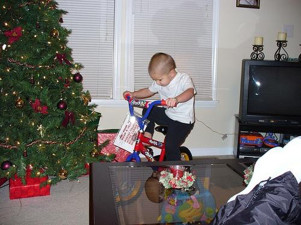

0.504778
0.588460
0.606306
0.619686

0.630652

0.637188

0.671033
0.675133

0.676860

0.678131
| Target image 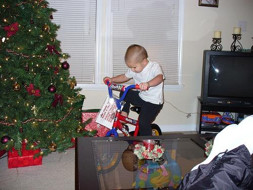 | 0.504778 | 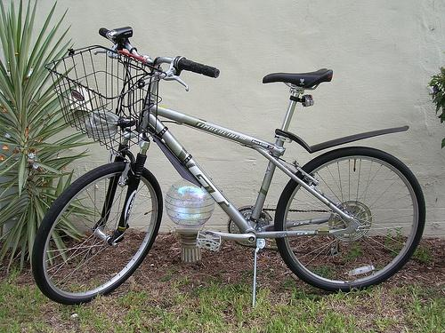 0.588460 | 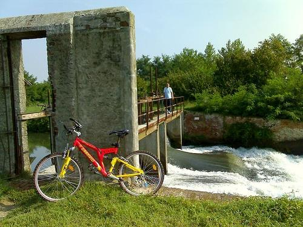 0.606306 | 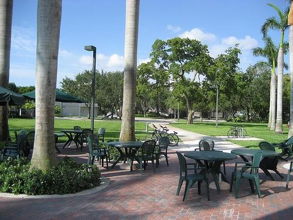 0.619686 | 0.630652 | 0.637188 | 0.671033 | 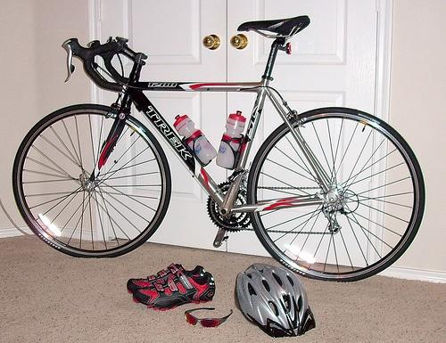 0.675133 | 0.676860 | 0.678131 |
| Target image 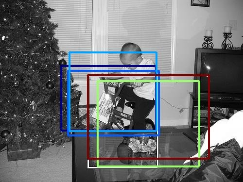 |  2611.440674 |  2442.191895 |  2342.578613 | 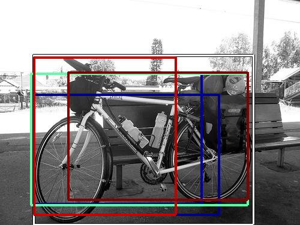 2102.627686 |  1971.596069 | 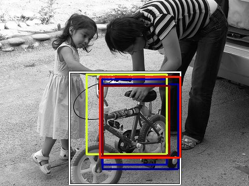 1888.486816 | 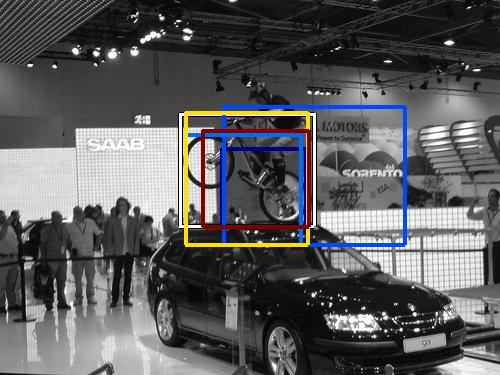 1746.729736 |  1736.536987 | 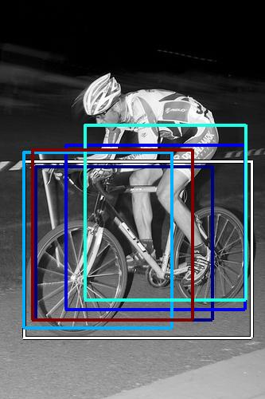 1720.472656 |  1689.221680 |
| Target image 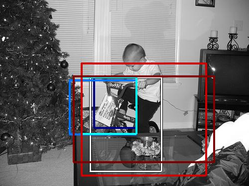 |  2965.366943 |  2756.408691 |  2270.957275 |  1928.127075 |  1926.185791 |  1873.502563 |  1841.719360 |  1837.576660 |  1768.984985 |  1749.461182 |
| Target image 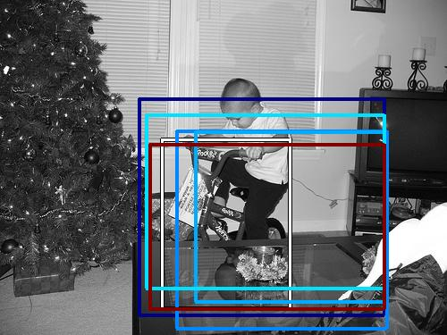 |  2515.377686 | 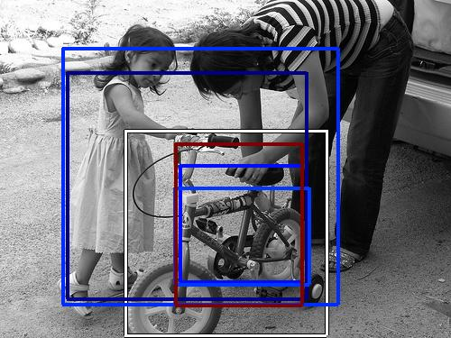 2370.410645 |  1987.125854 |  1941.100464 | 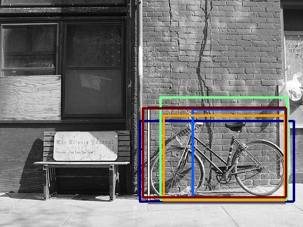 1851.924194 |  1806.165283 |  1805.675659 | 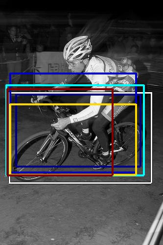 1758.081299 |  1721.875732 |  1700.557861 |
| Target image 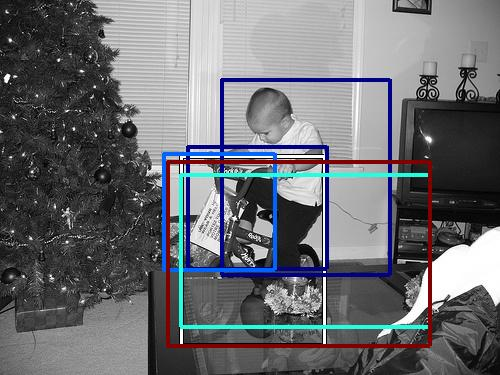 | 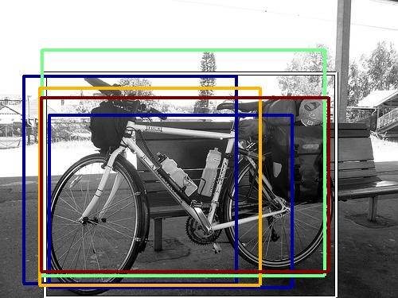 2459.894043 |  2127.677734 |  2049.810059 |  1972.254150 |  1905.327271 | 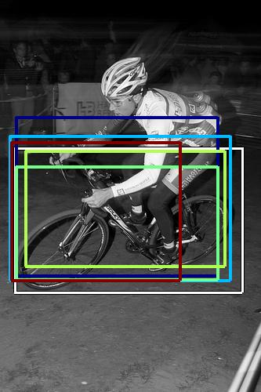 1890.222656 | 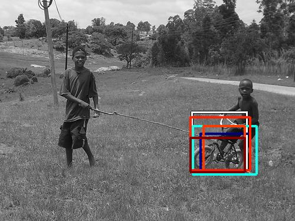 1846.792603 |  1837.769165 |  1796.236084 | 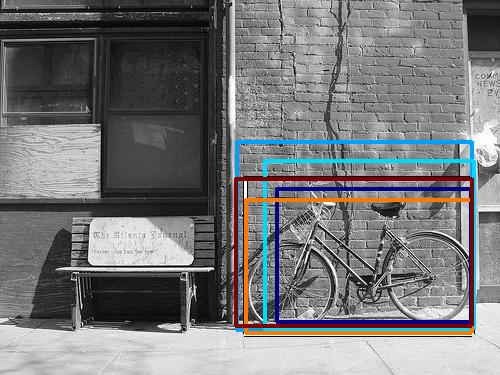 1779.795044 |